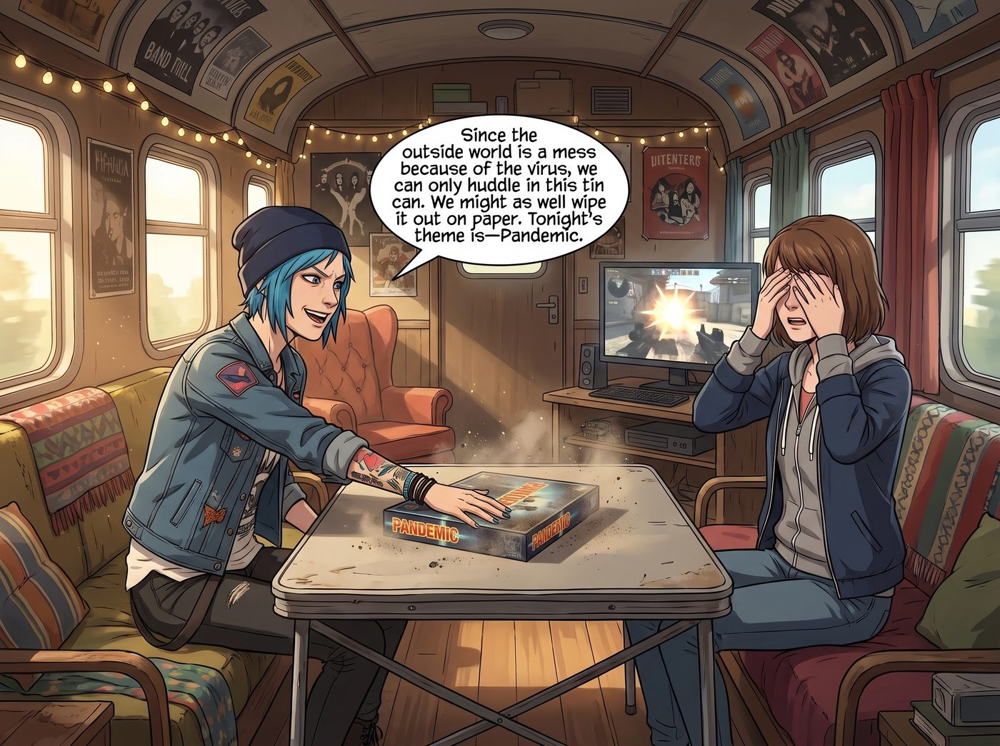
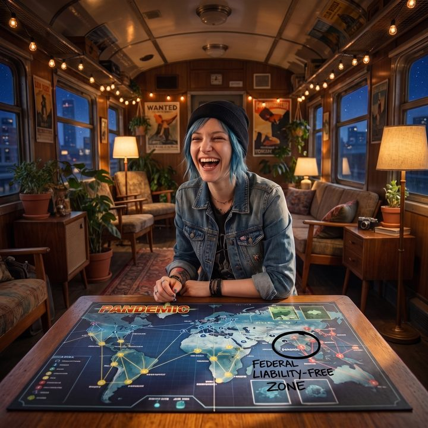

電車難題的陷阱


當連續對著螢幕打了四個小時的射擊遊戲後，Max 覺得自己的視網膜都快被閃光彈燒穿了。為了解救大家的眼睛，Chloe 從儲物櫃的最深處翻出了一個落滿灰塵的方形紙盒，重重地砸在露營桌上。
「既然外面的世界被病毒搞得一團糟，我們只能縮在這個鐵罐頭裡，」Chloe 嘴角勾起一抹極具挑釁意味的狂野笑容，「那不如我們在紙上把它幹掉。今晚的主題是——瘟疫危機。」
Victoria 穿著真絲睡衣，用看著某種排泄物的眼神看著那個桌遊盒。「妳是不是有什麼創傷後壓力症候群？我們現實中連出門都會被攔下，妳居然要我在休息時間繼續玩一款全球病毒大流行的合作遊戲？」
「這叫以毒攻毒，大小姐。」Chloe 已經開始熟練地在世界地圖版圖上擺放那些代表病毒的紅、黃、藍、黑四色塑膠方塊。「這是一個純合作遊戲。我們五個人對抗系統。贏了，拯救世界；輸了，人類滅絕。」
一、災難級的行政車禍
十分鐘後，角色分配完畢，而這支救世主團隊的運作，堪稱一場災難級的行政車禍。
擔任醫療人員的 Kate，完美地將她那份無差別的慈悲帶入了遊戲。「天哪，這座城市已經有三個黃色方塊了！那裡的醫療系統一定崩潰了！」Kate 焦急地握著手裡的木製棋子，將自己所有的行動點數都花在飛往那些偏遠城市，固執地要清除版圖上的每一個病毒方塊。
「Kate！妳的任務是幫我們清空主城區！妳跑去浪費三個回合清病毒有什麼用？！我們需要湊齊五張同色卡牌研發解藥！」扮演調度員的 Chloe 氣得大叫。
但 Chloe 自己也是個獨裁暴君。她利用調度員可以強制移動其他玩家的技能，像挪動棋子一樣把大家在版圖上甩來甩去。
「Chloe！妳憑什麼不經過我同意就把我空投到那裡？！」擔任應急規劃員的 Victoria 崩潰地尖叫，「那裡有三個黑色病毒方塊！」
而擔任研究員的 Max，則被這混亂的場面搞得焦慮症都要發作了。她手裡攥著三張藍色卡牌，瑟瑟發抖地看著疫情爆發的追蹤條一路飆升。
在遊戲的機制裡，當一個城市的病毒方塊超過三個，就會引發爆發，病毒會蔓延到周邊所有城市。如果爆發次數達到八次，遊戲直接宣告失敗。
「各位……」Max 弱弱地舉起手，「我們已經爆發七次了。而且牌堆裡還有一張流行病卡。如果下一回合抽到它……曼谷就會爆炸，然後引發連鎖反應，我們就全完了。」
二、資源損耗的數學模型
眼看這支充斥著聖母、暴君、精英主義者和焦慮症患者的團隊就要把人類文明徹底玩完，一隻蒼白纖細的手，輕輕按在了即將被翻開的牌堆上。
一直安靜地坐在角落、擔任營運專家的 Lily，推了推圓框眼鏡。
在過去的四十分鐘裡，Lily 幾乎沒有參與她們的爭吵。她只是在每個回合，默默地在版圖的各個關鍵節點上建造研究所。
「女士們，」Lily 的聲音依然軟糯、平靜，卻帶著一種讓沸騰的車廂瞬間降溫的行政威壓，「妳們之所以會把局面搞得如此難看，是因為妳們被這個遊戲的敘事外殼欺騙了。妳們把這些塑膠方塊當成了病人，把這張紙板當成了地球。但從博弈論和系統工程的角度來看，這只是一個資源損耗與閾值管理的數學模型。既然是數學模型，就不需要道德，只需要最冰冷的演算法。」
Lily 將桌上的局勢迅速掃視了一遍，然後轉向被道德感折磨得快要哭出來的 Kate。「Kate 學姐。現在輪到妳的行動回合。如果妳去曼谷清除病毒，可以阻止下一回合的連鎖爆發；但如果妳不去曼谷，而是留在主城區，將妳手裡的卡牌交給 Max 學姐，我們就能立刻研發出最後一種解藥，贏得遊戲。」
Kate 愣住了：「可是……如果不去曼谷，下回合抽到流行病卡，曼谷就會爆發！那裡有幾千萬人啊！」
「是的，在敘事上，曼谷會淪為人間地獄。」Lily 點了點頭，語氣沒有一絲起伏，「不僅如此，它還會將病毒傳染給周邊城市。但是……周邊城市目前都只有一個病毒方塊，根據規則，爆發只會在方塊達到三個時發生。也就是說，曼谷的毀滅，確實會造成周邊城市的感染率上升，但它絕對不會觸發第八次致命的全球連鎖爆發。」
三、殘忍的抉擇
Lily 抬起頭，看著徹底呆滯的四人，說出了這場遊戲中最殘忍的行政黑魔法：
「這在風險管理中叫做防火牆隔離犧牲。Kate 學姐，停止妳毫無意義的醫療救援。放棄曼谷。讓它爆發、讓它毀滅、讓它成為吸收系統冗餘傷害的海綿。我們不需要拯救每一個病人，我們只需要在系統的崩潰閾值到達之前，達成勝利條件。」
「這……這太冷血了……」Kate 握著棋子的手在發抖，「我們是醫療人員，我們怎麼能眼睜睜看著一座城市去死？」
「因為這就是宏觀治理的本質，Kate。」Victoria 突然開口了。這位名媛破天荒地對 Lily 的提議表示了高度的認同，她優雅地將手裡的卡牌推向中央，「我同意 Lily 的方案。放棄曼谷，保全主城區。這是一筆非常划算的止損交易。」
「Chloe 學姐？」Lily 轉頭看向最後的決策者。
Chloe 看了看版圖上即將爆炸的東南亞板塊，又看了看只需一步就能研發出解藥的主城區。她骨子裡那種為了勝利可以不擇手段的街頭本能，最終戰勝了對虛擬市民的同情。
「去他的曼谷。」Chloe 咬了咬牙，正準備把 Kate 的棋子按在主城區上。
四、被抓住的手腕
就在 Chloe 的手即將把棋子按下、準備宣告放棄曼谷的那一瞬間，一隻冰冷、顫抖的手猛地抓住了 Chloe 的手腕。
是 Max。
Max 的臉色蒼白得嚇人。她死死盯著版圖上那個堆滿了黃色死亡方塊的曼谷，但在她的視網膜裡，那裡不是曼谷。那是被超級龍捲風撕裂的小鎮，是在狂風暴雨中絕望哭泣的平民，是那個無論她怎麼回溯時間，都必須面臨的、殘酷到令人作嘔的二選一。
救多數人，還是救一個人？救世界，還是救 Chloe？
「不。」Max 的聲音在發抖，眼眶瞬間紅了，「我不放棄曼谷。我們不能放棄曼谷。」
「Max，這只是一個遊戲……」Victoria 皺起眉頭，正要抱怨，卻被 Chloe 用一個極度兇狠的眼神硬生生瞪了回去。
作為曾經在那場毀滅性風暴中活下來的當事人，Chloe 比任何人都清楚 Max 此刻在經歷什麼。那是她最深層的創傷。在 Max 眼裡，那不是一塊紙板，那是另一個被系統逼迫著送上祭壇的家鄉。
「聽著，Max……」Chloe 鬆開了棋子，反過來溫柔地握住 Max 冰冷的手，聲音放得很輕，「我們不放棄。如果妳想救，我們就去救。大不了我們一起輸掉這盤遊戲，讓全人類給我們陪葬，反正我一直覺得人類挺煩的。」
Kate 也立刻點頭，把手裡的牌推了過去：「沒關係的，Max。我們去曼谷，就算輸了，至少我們做了對的事。」
整個車廂的氣氛，從剛才冰冷的風險管理，瞬間倒退回了極度不理智的感情用事。眼看這場遊戲就要以一種極其壯烈卻毫無邏輯的方式走向失敗。
五、電車難題的陷阱
「Max 學姐。」
Lily 依然坐在角落裡，手裡端著熱牛奶。她平靜地看著這一切，眼神沒有嘲笑，也沒有被打亂計畫的憤怒。
「您正在陷入一個經典的電車難題陷阱。」Lily 放下杯子，語氣輕柔，卻帶著一種不容辯駁的穿透力，「但您知道，從行政學的角度來看，電車難題本質上是什麼嗎？」
Max 抬起淚眼婆娑的眼睛，呆呆地看著她。
「它是一個管理層瀆職的推卸責任模型。」Lily 站起身，走到露營桌前，「如果軌道保養得當，如果電車的煞車系統經過了合規檢查，如果調度中心沒有失職……電車根本就不會失控。系統的管理者因為自己的無能，製造了一場災難，然後卻給了站在軌道旁邊的您一個扳手，逼著您在死一個人還是死五個人之間做選擇。最後，無論您怎麼選，您都會背負一生的罪惡感，而系統本身卻能全身而退。」
Lily 推了推圓框眼鏡，眼神中閃過一絲冰冷的蔑視：「這款桌遊的設計師，就是那個無能的管理者。他用死板的規則和資源限制，強行逼迫您去犧牲一座城市。他希望看到您在道德的泥沼裡痛苦掙扎。」
「可是……規則就是這樣寫的啊。」Kate 弱弱地說。
「當規則強迫我們接受悲劇時，我們不選擇悲劇。」Lily 伸手從口袋裡掏出一支黑色的奇異筆，「我們選擇修改規則。」
六、聯邦免責區
在所有人震驚的目光中，Lily 拔下筆蓋，直接在那張印刷精美的世界地圖版圖上，圍著曼谷畫了一個重重的黑圈。
「Lily！妳在幹嘛？這套桌遊絕版了！」Chloe 驚呼。
Lily 沒有理會，而是用極度嚴謹的語氣宣告：「作為本營地的首席法務官，我現在正式援引聯邦災難緊急豁免法案。我宣佈，曼谷板塊從這一秒起，被整體打包、私有化，並被無限期租借出去，成為一級海外生化實驗黑牢。」
Lily 伸出蒼白的手指，將曼谷上面的三個黃色病毒方塊全部撥到了版圖外面。
「Victoria 學姐，」Lily 轉頭看向依然處於呆滯狀態的名媛，「您的家族信託剛剛以一美金的價格，買斷了這座城市的醫療管轄權。這裡的病毒爆發，屬於機密與私人財產的內部損耗。因此……它不再計入世界衛生組織的全球疫情爆發追蹤條裡。」
「妳……妳這是作弊！」Victoria 目瞪口呆。
「這叫行政干預與合規套利，學姐。」Lily 乖巧地將奇異筆蓋好，放回口袋，「我們沒有違反遊戲的任何物理規則，我們只是從法理上，把這座城市從遊戲系統裡剝離了。既然它不屬於這個世界了，它的毀滅就不算這個世界的爆發。」
說完，Lily 拿起代表最後一瓶解藥的藍色模型，輕輕放在了版圖中央的主城區上。
「現在，Max 學姐。」Lily 溫柔地看著那個還在發抖的女孩，「解藥研發成功。遊戲勝利。而且，沒有任何一座城市被作為代價犧牲。我們白嫖了系統的勝利，並且讓系統自己吞下了那個該死的電車難題。」
七、透出陽光的暴雨
車廂裡死一般的寂靜。
幾秒鐘後，Chloe 爆發出一陣狂野的、甚至笑出了眼淚的大笑。她一把將 Lily 摟過來，用力揉著這個腹黑少女的頭髮。「實習生！我收回我之前的話！妳不是邪惡的資本家，妳是個專門欺負系統的活菩薩！」
Kate 也長長地舒了一口氣，破涕為笑：「雖然聽起來還是有點像在洗黑錢……但曼谷得救了，對吧？」
「當然。在帳面上，它現在是一座非常健康的、不存在的城市。」Lily 依然保持著那副純良的表情。
Max 怔怔地看著版圖上那個被奇異筆圈起來的曼谷。沒有犧牲。沒有殘酷的二選一。在 Lily 的極致黑魔法面前，那個折磨了她無數個日夜的道德死結，被一種極度荒謬卻又無比強勢的官僚主義直接降維打擊，灰飛煙滅。
Max 舉起寶麗來相機。鏡頭裡，不是堆滿病毒的末日，而是被黑色馬克筆圈起來的聯邦免責區，以及在旁邊笑得肆無忌憚的 Chloe。
「喀嚓。」
照片吐了出來。Max 將它小心翼翼地收進口袋，心裡那片一直下著暴雨的家鄉，終於奇蹟般地，透出了一絲陽光。